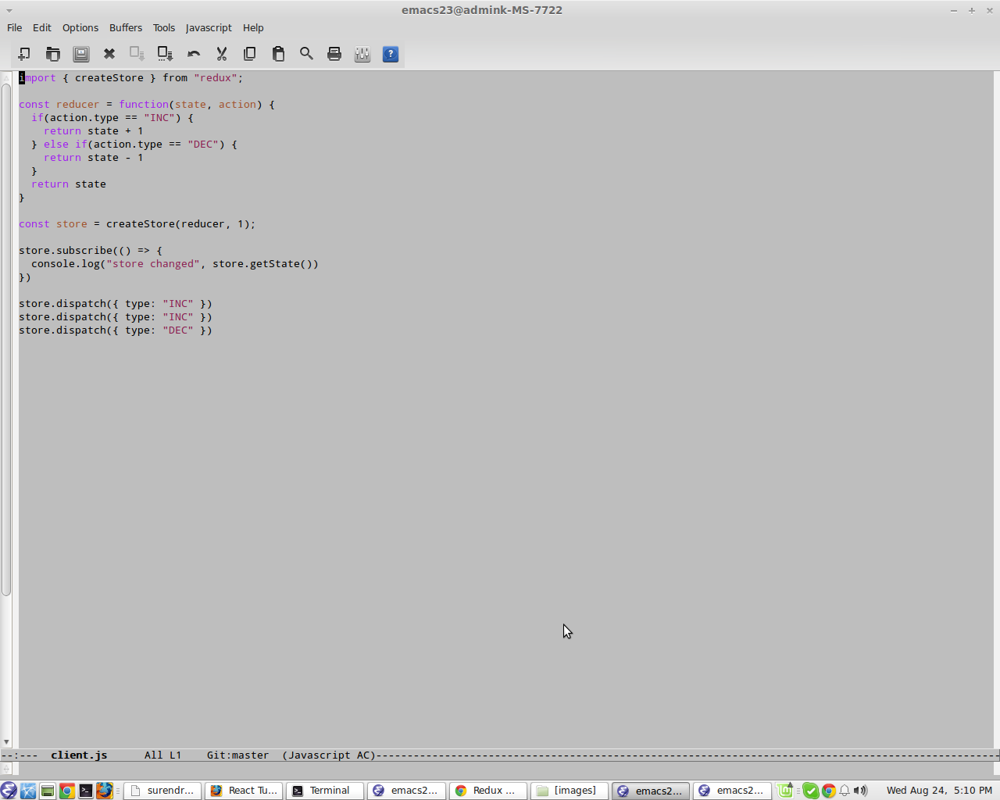
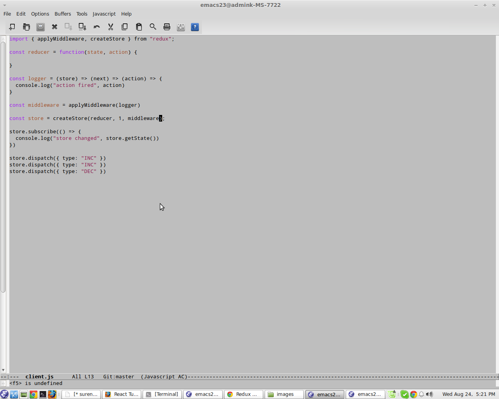
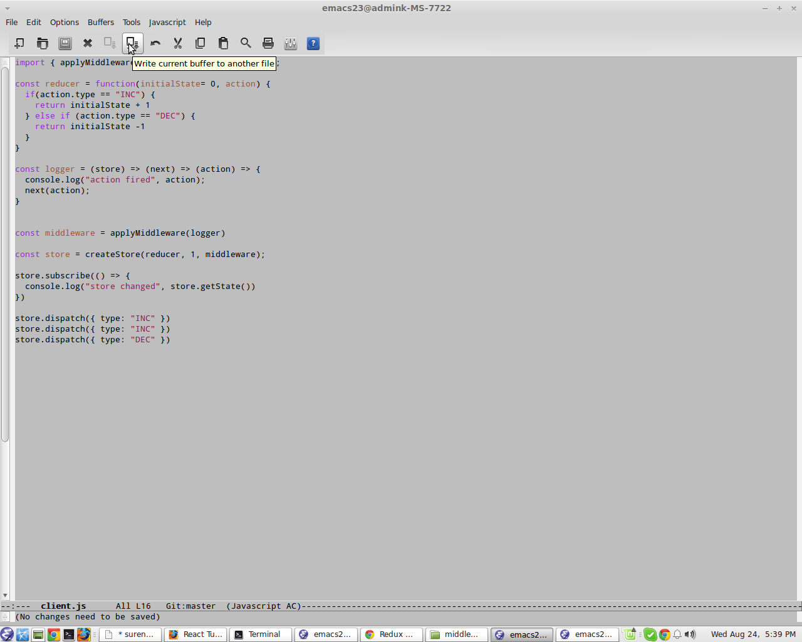

Presented by Santanu Bhattacharya
React is a JavaScript library for creating user interfaces by Facebook and Instagram. Many people choose to think of React as the V in MVC.
We will need node js to speed up the development. We need some of the babel plugins.
{
"name": "application_name",
"version": "1.0.0",
"description": "application_description",
"main": "main.js",
"scripts": {
"start": "webpack-dev-server --hot"
},
"author": "",
"license": "ISC",
"dependencies": {
"babel-core": "^6.11.4",
"babel-loader": "^6.2.4",
"babel-preset-es2015": "^6.9.0",
"babel-preset-react": "^6.11.1",
"react": "^15.3.0",
"react-dom": "^15.3.0",
"webpack": "^1.13.1",
"webpack-dev-server": "^1.14.1"
}
}
We have to create one 'webpack.config.js' file. The entry point of the application is 'main.js'. Output path is the path where the bundled app will be served. Development server will run to 8080 port. We are setting babel loaders to search for js files and use es2015 and react presets that we installed before.
var config = {
entry: './main.js',
output: {
path:'./',
filename: 'index.js',
},
devServer: {
inline: true,
port: 8080
},
module: {
loaders: [
{
test: /\.jsx?$/,
exclude: /node_modules/,
loader: 'babel',
query: {
presets: ['es2015', 'react']
}
}
]
}
}
module.exports = config;
Instances of a React Component are created internally in React when rendering. UI components are the cohesive units. UI description and UI logic are tightly coupled.Full power of Javascripts to express UI.
var li1 = React.createElement('li', null, "First text");
var li2 = React.createElement('li', null, "Second text");
var ul = React.createElement('ul', { className: 'text-list' }, li1, li2);
React.render(ul, document.getElementsById('app'));
React uses JSX for templating instead of regular JavaScript. It is not necessary to use it, but there are some pros that comes with it.
var List = React.createClass(({
render: function() {
return(
<ul className="text-list">
<li>First text</li>
<li>Second text</li>
</ul>
)}
}));
var App = React.createClass({
render: function() {
return(
<div>
<Header />
<UserList />
<Footer />
</div>
)
}
});
var App = React.createClass({
render: function() {
return(
<div>
<Header data="My Header"/>
<UserList />
<Footer />
</div>
)
}
});
var Header = React.createClass({
render: function() {
return(
<h4>
{this.props.data}
</h4>
)
}
});
From child to parent. We can pass the event handler as a property.
var App = React.createClass({
popUser: function(key) {
console.log("User to be poped"+ key);
},
render: function() {
return(
<div>
<Header data="My Header"/>
<UserList popUser={this.popUser}/>
<Footer />
</div>
)
}
});
var UserList = React.createClass({
showName: function(event) {
this.props.popUser(event.target.value);
},
render: function() {
return(
<input type="text" onChange={this.showName} />
)
}
});
Form components such as input, textarea, and option. Components support a few props that are affected via user interactions:
Redux is a predictable state container for JavaScript apps. It helps you write applications that behave consistently, run in different environments. On top of that, it provides a great developer experience.
Add "redux": "^3.5.2" to your package.json.
Immutable Javascript means that we're never going to change a value once it's been set on an object. We simply always create new objects and copy their values over.
var a = { name: "Will", age: 32 }
a.name = "Fred"
a
> { name: "Fred", age: 32 }
var a = { name: "Will", age: 32 }
b = a
b
> { name: "Will", age: 32 }
b.age = 35
b
> { name: "Will", age: 35 }
a
> { name: "Will", age: 35 }
You have to know how to code immutable js objects.
var a = { name: "Will", age: 32 }
a
> { name: "Will", age: 32 }
var b = Object.assign({}, a, { age: 35 })
b
> { name: "Will", age: 35 }
a
> { name: "Will", age: 32 }
var a = [0, 1, 2]
var b = a.filter((val) => val != 2)
b
> [0, 1]
a
> [0, 1, 2]
Redux is not based on React. Redux is an elegantly simple way to manage state for your applications. First we have to create the store.
import { createStore } from "redux";
const reducer = function() {
}
const store = createStore(reducer, 0);
store.subscribe(() => {
console.log("store changed", store.getState())
})
import { createStore } from "redux";
const reducer = function() {
}
const store = createStore(reducer, 0);
store.subscribe(() => {
console.log("store changed", store.getState())
})
store.dispatch({ type: "INC", payload: 1 });
> store changed undefined
import { createStore } from "redux";
const reducer = function(state, action) {
if(action.type == "INC") {
return state + 1;
}
return state;
}
const store = createStore(reducer, 0);
store.subscribe(() => {
console.log("store changed", store.getState())
})
store.dispatch({ type: "INC", payload: 1 });
store.dispatch({ type: "INC", payload: 1 });
store.dispatch({ type: "INC", payload: 1 });
store.dispatch({ type: "INC", payload: 2 });
> store changed 1
> store changed 2
> store changed 3
> store changed 5
Once your store is in place, you'll want to set up multiple Redux reducers to act on parts of your data store. Redux reducers are great in that they are only aware of part of your data, and the rest of the data is neither reachable nor able to be mutated by your reducer.
import { combineReducers, createStore } from "redux";
import userReducer from "./userReducer.js"
import tweetsReducer from "./tweetReducer.js"
const reducers = combineReducers({
user: userReducer,
tweets: tweetsReducer
})
const store = createStore(reducers, {
user: {
name: "Will",
age: 32
},
tweets: []
});
store.subscribe(() => {
console.log("store changed", store.getState())
})
store.dispatch({ type: "CHANGE_NAME", payload: "Fred" })
store.dispatch({ type: "CHANGE_AGE", payload: 35 })
userReducer
const userReducer = (state={}, action) => {
switch(action.type) {
case "CHANGE_NAME": {
state = {...state, name: action.payload }
break;
}
case "CHANGE_AGE": {
state = {...state, age: action.payload }
break;
}
}
return state;
}
export default userReducer;
tweetsReducer
const tweetsReducer = (state=[], action) => {
return state
}
export default tweetsReducer
Redux middleware is awesome, it allows you to keep the simplicity of Redux, yet extend it's functionality. Adding global things like loggers, error handlers, etc are incredibly simple.
Adding logger
Adding logger
When you call an asynchronous API, there are two crucial moments in time: the moment you start the call, and the moment when you receive an answer (or a timeout).
We can add axios client to our javascript library. It is a promise based HTTP client for the browser and node.js. Add it to package.json
"axios": "^0.12.0",